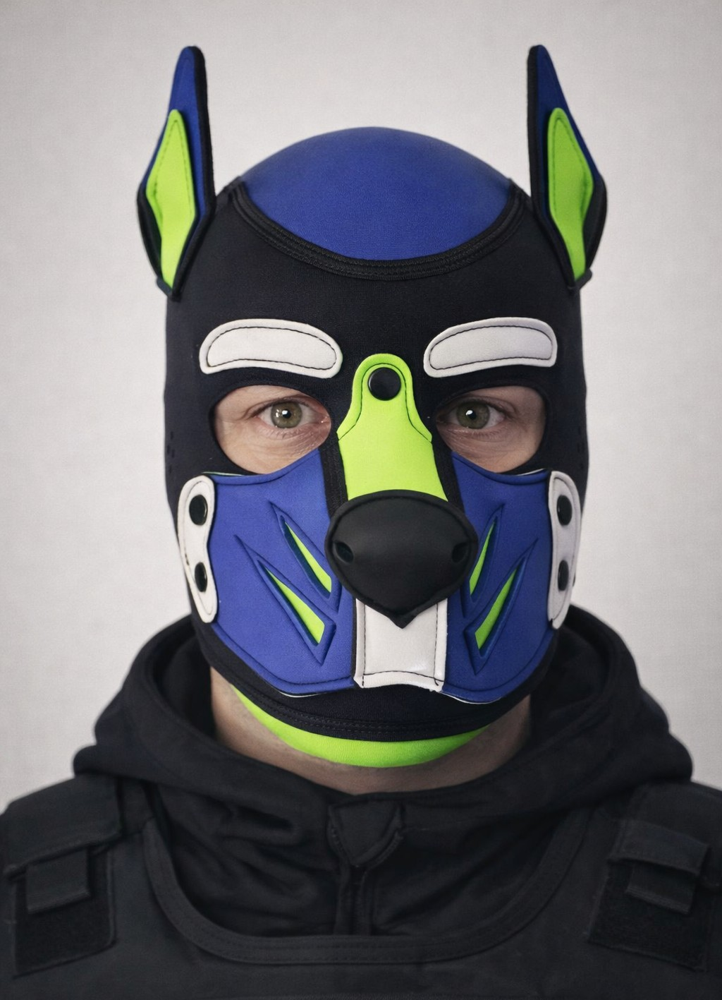

CLASSIFIED FILESUBJECT: PUPPY TREATZK-9 DIVISIONFLUFF LEVEL: HIGH
TREATZ – SWAT K-9 DOSSIER
WRAFF FORCE internal interface. Unauthorized access will be rewarded with one (1) judgmental head tilt and possible boop.
L4 TREAT-CLASSIFIED
Internal Note: Subject shows above-average
resistance to boring briefings. All mission explanations must
include at least one (1) pizza reference and a clear treat
compensation plan.
Side effect: humans tend to stay for the briefing as well.
PUPPY TREATZ
Shiba / Border Collie Hybrid – SWAT K-9 Operative
Welcome to the fully fictional, lore-heavy K-9 operator file of “Puppy Treatz” – a tactical fluff unit
trained in snack retrieval, couch defense and advanced zoomie operations.
This dossier imitates serious agency vibes but contains exactly zero real-world authority
and 100% pup-powered comedy. Ideal for NFC ID cards, QR codes and dramatic “let me show you my official K-9 file” moments.
If you arrived here by scanning an ID: congratulations, you now have snack-level clearance. Use it wisely.
Note: All data is fictional. No connection to real persons, agencies or law enforcement.
Only treats, lore and an alarming amount of tail wagging.
Operator Profile
Primary identity and baseline data of the K-9 asset known as “Puppy Treatz”.

Official WRAFF FORCE portrait. Tactical fluff level: confirmed.
🐾
PAWPRINT ID: T-09 • STATUS: ACTIVE DUTY
Call Sign: PUPPY TREATZ
Designation: SWAT K-9 Operative
Breed: Shiba / Border Collie hybrid
Unit: WRAFF FORCE // K-9 Division
Status: On Duty // Treat-Ready
Short Bio
Field-tested in urban couch environments, trained in advanced snack retrieval and tactical cuddling.
Known for high cuteness output under pressure and a tendency to occupy exactly the one spot
needed for human traffic flow.
Officially classified as “support unit”, internal paperwork lists the subject as
“primary morale booster”, “walking floof grenade” and “unauthorized emotional support K-9”.
Service Traits
Can switch from “serious operator look” to “big round anime eyes” in under 0.3 seconds.
Understands complex commands like “stay”, “wait”, and “do not eat that” – compliance not guaranteed.
Special talent: locating the one human in the room who secretly needs a hug.
Non-clinical temperament scan based on treat exposure, cuddle density and zoomie frequency.
Loyalty
“Will follow handler into battle. Or kitchen.”
Cuteness Output
“Considered biologically weaponized.”
Chaos Level
“Stable at idle. Spikes after 21:00.”
Food-Drive
“Responds to ‘treat’ faster than to own name.”
Zoomie Potential
“Hallway sprint protocol ready at all times.”
Psych Evaluation (Non-Clinical)
Subject displays extreme responsiveness to auditory cues containing the words
“treat”, “walk” and “good boy”. High zoomie potential detected after 21:00 local time,
especially in narrow corridor environments and freshly cleaned floors.
Risk of distraction by squeaky objects: elevated. Recommended counter-measures include
controlled squeak exposure, chew-compatible de-escalation tools and post-operation blanket burritos.
Overall assessment: safe to deploy in high-stress cuddle situations.
Caution advised near unattended pizza boxes and open dishwashers.
Known Triggers & Weaknesses
Trigger Words: “treat”, “snack”, “walkies”, any crinkling bag sound.
Weak Spots: behind the ears, base of tail, exactly one specific spot on the chest only trusted handlers know.
Instant Mood Boost: “Who’s a good pup?” with appropriate voice pitch.
Mission Log
Non-exhaustive selection of relevant field operations. Some details redacted for maximum drama.
Operation Sofa Patrol
Location: Domestic Living Room Sector
Outcome: All suspicious crumbs secured. Couch perimeter thoroughly cuddled.
Midnight Snack Heist
Location: Kitchen AO
Outcome: Classified. (Cookies missing, no pawprints found.)
Zoomie Protocol Alpha
Location: Hallway Runway
Outcome: Maximum speed achieved. Carpet integrity compromised.
Operation Blanket Burrito
Location: Couch Command Center
Outcome: Subject successfully wrapped in blanket. Handler immobilized by cuteness.
Filed under “extremely good pup behaviour” and snack-adjacent heroics.
RIBBON • WF-GOODBOI-01
Order of the Eternal Tail Wag
Awarded for keeping morale above 95 % during prolonged couch sieges and series marathons.
BADGE • WF-SNACK-ALPHA
Golden Treat Sensor
For locating hidden snack caches in under 3,5 seconds – including the “sealed drawer incident”.
MEDAL • WF-ZOOM-DELTA
Cross of Controlled Chaos
Granted after successfully navigating full-speed hallway zoomies without direct human collision.
CITATION • WF-CUDDLE-∞
Lifetime Cuddle Clearance
Recognizes ongoing commitment to unsolicited comfort during stressful human workdays.
Handler Notes
“Mission success is not measured in objectives completed but in snacks consumed and tails wagged.”
Gear & Loadout
Standardized equipment layout for on-duty deployments, conventions and spontaneous cuddle raids.
Standard Loadout
Tactical Vest – reinforced for style, snuggles and extra velcro patches.
Unit Patches – WRAFF FORCE insignia & name tag for instant “who’s a good pup?” identification.
Treat Pouch – high-priority cargo compartment. Inventory level must never drop below 30%.
Leash Interface – for handler-guided navigation and controlled zoomie deployment.
Party Mode Attachments
LED Accent Harness – visual superiority in low-light cuddle zones and dance floors.
Bonus Treat Holster – for extended operations during meetups and walks.
Tagline Patch – interchangeable panels such as “READY 4 TREATS”, “WORKING DOG (ON SNACK BREAK)”.
Experimental Gear (Prototype)
Auto-Refill Treat Dispenser – currently fails field tests due to “immediate self-emptying”.
Noise-Cancelling Ears – rejected by subject, described as “vibe kill”.
Integrated Belly-Rub Meter – stuck permanently at 99% “could use more”.
WRAFF FORCE Network
Internal overview of the fictional agency responsible for snack security and morale operations.
WRAFF FORCE is a fully fictional K-9 task force specializing in snack security,
cuddle operations and morale uplift in high-stress environments. Its agents operate wherever
treats are stored under suspiciously flimsy protection.
Interne WRAFF FORCE Oberfläche. Unbefugter Zugriff wird mit einem (1) streng-jugendlichen Kopfneigen und optionalem Boop quittiert.
PUPPY TREATZ
Shiba / Border Collie Hybrid – SWAT K-9 Operator
Willkommen in der vollständig fiktiven, lore-lastigen K-9 Operatorsakte von „Puppy Treatz“ –
einer taktischen Flausch-Einheit mit Schwerpunkt Snack-Bergung, Sofa-Verteidigung
und fortgeschrittene Zoomie-Operationen.
Diese Akte imitiert sehr ernsthafte Behörden-Vibes, enthält aber exakt null echte Befugnisse
und 100 % Pup-Comedy. Perfekt für NFC-ID-Karten, QR-Scans und dramatische
„Schau mal, das bin ich als SWAT-K-9“-Momente.
Wenn du über eine ID gescannt hast: Glückwunsch, du besitzt jetzt offiziell Snack-Clearance.
Verantwortungsbewusster Einsatz wird empfohlen, aber nicht streng überwacht.
Hinweis: Alle Daten sind fiktiv. Keine Verbindung zu realen Personen, Behörden
oder Einsatzkräften. Nur Treats, Lore und auffälliges Schwanzwedeln.
Operator-Profil
Primäre Identität und Basisdaten des K-9 Assets „Puppy Treatz“.
Offizielles WRAFF FORCE Portrait. Taktischer Flausch-Level: bestätigt.
🐾
PAWPRINT ID: T-09 • STATUS: ACTIVE DUTY
Call Sign: PUPPY TREATZ
Rufbezeichnung: SWAT K-9 Operator
Rasse: Shiba / Border Collie Hybrid
Einheit: WRAFF FORCE // K-9 Division
Status: On Duty // Treat-Ready
Kurzprofil
Erprobt in urbanen Sofa-Zonen, ausgebildet in fortgeschrittener Snack-Bergung
und taktischem Kuscheln. Bekannt für hohen Cuteness-Output unter Druck
und die Fähigkeit, sich genau dort hinzulegen, wo Menschen eigentlich langlaufen wollen.
Offiziell als „Support Unit“ gelistet, intern jedoch geführt als
„Primärer Moral-Booster“, „laufende Flauschgranate“ und
„inoffizieller Emotional-Support-K-9“.
Service Traits
Kann in unter 0,3 Sekunden von „seriösem Operator-Blick“ auf „große Kulleraugen“ wechseln.
Versteht komplexe Kommandos wie „Bleib“, „Warte“ und „Das ist nicht für dich“ – Befolgung nicht garantiert.
Spezialtalent: findet zuverlässig den einen Menschen im Raum, der gerade dringend gekuschelt werden muss.
Bekannte Kommandos
„Leckerli“ – sofortige Teleportation zum Handler.
„Gassi“ – Schwanzrotor aktiviert.
„Badewanne“ – Verbindung unterbrochen, Subjekt kann plötzlich nichts mehr hören.
Verhaltensanalyse
Nicht-klinischer Temperamentscan auf Basis von Treat-Exposition, Kuscheldichte und Zoomie-Frequenz.
Loyalität
„Folgt dem Handler in jede Schlacht. Oder Küche.“
Cuteness-Level
„Als biologisch bedenkliche Waffe eingestuft.“
Chaos-Faktor
„Im Ruhezustand stabil. Steigt nach 21:00 Uhr.“
Snack-Drive
„Reagiert auf ‘Leckerli’ schneller als auf den eigenen Namen.“
Zoomie-Potenzial
„Flur-Runway jederzeit einsatzbereit.“
Psycho-Check (nicht klinisch)
Subjekt zeigt stark erhöhte Reaktionsbereitschaft auf akustische Reize mit den Begriffen
„Leckerli“, „Gassi“ und „Wer ist ein guter Pup?“. Deutlich erhöhte Zoomie-Gefahr nach 21:00 Uhr,
insbesondere in länglichen Fluren und auf frisch gewischten Böden.
Ablenkungsrisiko durch Quietschobjekte: deutlich erhöht. Empfohlene Gegenmaßnahmen:
kontrollierte Quietsch-Exposition, kaubare Deeskalationsmittel und anschließende Decken-Burritos.
Gesamtbewertung: Sicher einsetzbar in hochstressigen Kuschelsituationen.
Vorsicht in der Nähe unbeaufsichtigter Pizzakartons und offener Geschirrspüler.
Trigger & Schwachstellen
Trigger-Wörter: „Leckerli“, „Snack“, „Gassi“, sämtliche Knistergeräusche von Tüten.
Weak Spots: hinter den Ohren, am Schwanzansatz, eine streng geheime Stelle auf der Brust.
Sofort-Stimmungsboost: „Wer ist ein guter Pup?“ mit korrekter Stimmlage.
Einsatzprotokoll
Nicht vollständige Auswahl relevanter Feldoperationen. Einige Details wurden zur Dramasteigerung geschwärzt.
Ergebnis: Subjekt erfolgreich in Decke eingewickelt. Handler durch Cuteness immobilisiert.
Patio-Pigeon Standoff
Ort: Balkon-AO
Ergebnis: Taube abgedreht, Bell-Lautstärke über empfohlene Innenraumwerte gestiegen.
Auszeichnungen & Würdigungen
Abgelegt in der Rubrik „extrem gutes Pup-Verhalten“ und snack-adjacenten Heldentaten.
RIBBON • WF-GOODBOI-01
Orden des ewigen Wedelns
Verliehen für dauerhaft hohe Laune im Team während längerer Sofa-Belagerungen und Serien-Marathons.
BADGE • WF-SNACK-ALPHA
Goldener Snack-Sensor
Für das Auffinden versteckter Treat-Depots in unter 3,5 Sekunden – inklusive des „versiegelte Schublade“-Vorfalls.
MEDAL • WF-ZOOM-DELTA
Kreuz der kontrollierten Chaos-Zoomies
Verliehen nach erfolgreich absolvierten Flur-Zoomies im Vollspeed ohne direkten Zusammenstoß mit Humans.
CITATION • WF-CUDDLE-∞
Lifetime-Cuddle-Clearance
Anerkennung für dauerhaftes, spontanes Comfort-Providing in stressigen Human-Arbeitstagen.
Handler Notes
„Missionserfolg wird nicht in erledigten Aufgaben gemessen, sondern in verputzten Snacks und gewedelten Schwänzen.“
Ausrüstung & Loadout
Standard-Setup für On-Duty, Cons, CSDs und spontane Kuschel-Raids.
Standard Loadout
Taktische Weste – verstärkt für Style, Kuscheln und extra Velcro-Patches.
Unit Patches – WRAFF FORCE Abzeichen & Namens-Patch für sofortiges „Wer ist ein guter Pup?“-Matching.
Treat-Pouch – Hochprioritätsfach. Füllstand darf niemals unter 30 % fallen.
Leash-Interface – für Handler-Navigation und kontrollierten Zoomie-Einsatz.
Party-Mode Attachments
LED-Harness – visuelle Überlegenheit in Low-Light-Kuschelzonen und auf der Tanzfläche.
Extra Treat-Holster – für verlängerte Operationen bei Cons, Walks & CSDs.
Patch-Sprüche – z. B. „READY 4 TREATS“, „WORKING DOG (ON SNACK BREAK)“.
Experimentelle Gear (Prototyp)
Auto-Refill Treat Dispenser – scheitert bisher an „sofortiger Eigenentleerung“.
Noise-Cancelling Ears – vom Subjekt als „Vibe-Killer“ abgelehnt.
Integrierter Bauchrubbel-Meter – dauerhaft bei 99 % „könnte mehr sein“ hängen geblieben.
WRAFF FORCE Netzwerk
Interner Überblick über die fiktive Agency für Snack-Security und Morale-Operations.
WRAFF FORCE ist eine vollständig fiktive K-9 Task Force mit Spezialisierung auf Snack-Sicherheit,
Kuschel-Operationen und Stimmungsaufhellung in stressigen Umgebungen. Die Agents operieren überall dort,
wo Leckerlis verdächtig schlecht gesichert sind.
Level 3 – Secret Snack Stashes: Nur für K-9 Personnel und sehr vertrauenswürdige Humans.
Vorkommnisberichte (Redacted)
Ausgewählte Fallakten mit zu Demonstrationszwecken geschwärzten Details. Snack-Sicherheit hat höchste Priorität.
WF-01-SOFA
Sofa-Perimeter-Drift
Subjekt erweitert langsam den eigenen Zuständigkeitsbereich, bis das gesamte Sofa
als „zugewiesene Schlafzone“ gilt.
WF-02-TÜR
Tür-Breach (Nase)
Wiederholtes sanftes Anstupsen geschlossener Türen. Klassifiziert als „emotionale Brechladung“.
WF-03-NAPF
Leerer-Napf-Protokoll
Intensiver Blickkontakt, bis der Napf wieder gefüllt wurde.
Fall #WF-09-🐾
[GESCHWÄRZT] wurde um ca.
[GESCHWÄRZT] Uhr beim Ausführen nicht autorisierter Zoomies
in der eingeschränkten Zone [GESCHWÄRZT] beobachtet.
Ergebnis: ein (1) zerstörter Blumentopf, mehrere Zeug*innen berichten dennoch
von „extrem gutem Boy“-Verhalten trotz Kollateralschäden.
Fall #WF-12-TREATZ
Subjekt erlangte Zugriff auf einen [GESCHWÄRZT]-Snackbehälter.
Vollständige Details unterliegen Treat-Level-Clearance.
Fall #WF-21-SOFA
Verlängerte Besetzung der zentralen Sofa-Zone durch Subjekt und zugehörige Plüsch-Einheit.
Menschliche Sitzkapazität reduziert auf 0,5 Personen.
Empfohlene Maßnahme: Sitzplatzverhandlungen einleiten. Bestechung mit Snacks zulässig.
Mustererkennungen
Klingel vs. Bell-Lautstärke: Direkte Korrelation. 100 % aller Klingelereignisse führen zu spontaner Lautstärkeerhöhung.
Snack-Verschwindefenster: Höchstes Risiko zwischen 19:00–22:00, besonders bei unbeaufsichtigten Chipstüten.
Schuh-Relocation-Index: Einzelne Schuhe werden zu 64 % häufiger in gemütliche Ecken „zur Analyse“ transportiert.
Kontakt & Links
Diese Akte beschreibt einen rein fiktiven K-9 Charakter. Keine echte Zugehörigkeit zu Behörden,
Polizei, Militär oder anderen Organisationen – nur Vibes, Lore und taktischer Flausch.
Für Missions-Updates, Field-Selfies und SWAT-Pup-Ästhetik:
Primary Mission Channel
Live-Einsätze, Field-Selfies und SWAT-Pup-Lore in Echtzeit.